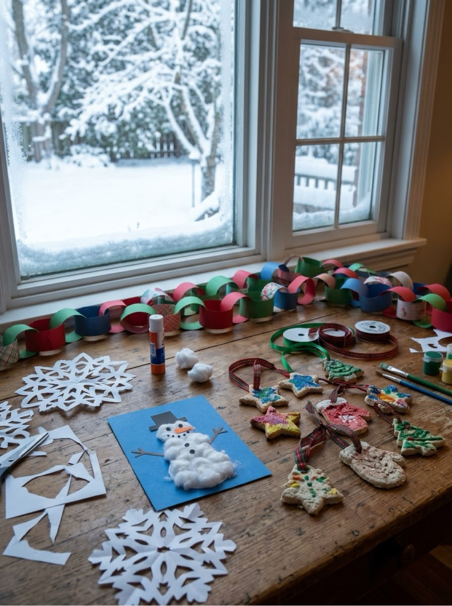
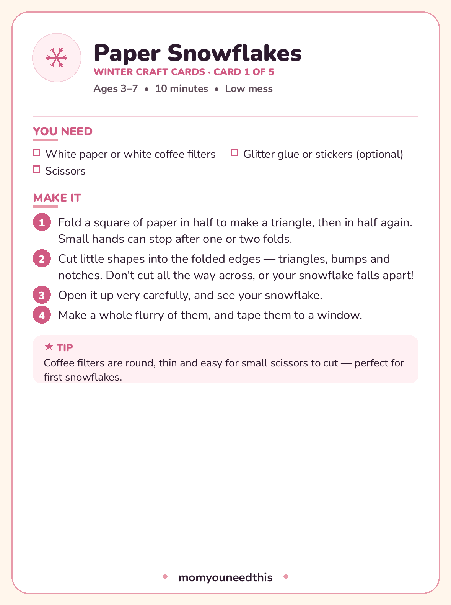

Winter Crafts Five cozy projects for ages 3–7 — snowflakes, a snowman, ornaments and a pinecone tree
When it is too cold to stay outside, these winter crafts bring the season to the kitchen table: paper snowflakes for the window, a cotton-ball snowman, salt-dough ornaments that become real keepsakes, a paper-chain garland, and a pinecone Christmas tree. All five suit ages 3 to 7, use supplies most homes already have, and come with a printable card each — print the pack and work through it one snow day at a time.
Last updated: October 21, 2026

Quick Answer
Five projects, ages 3–7: paper snowflakes (start here), a cotton-ball snowman, salt-dough ornaments (the keepsake), a paper-chain garland and a pinecone Christmas tree. Only the salt dough needs an oven — and it can air-dry instead — with the baking step clearly marked as a grown-up job. All five cards print free in one PDF.
At a Glance
- Ages: 3–7
- What you get: 5 projects, plus all 5 as printable project cards in one free PDF
- Oven: only for the salt-dough ornaments — and those can air-dry for 2–3 days instead
- Cost: Free — paper, cotton balls, flour, salt and one pinecone
❄️ Paper Snowflakes
Start here. A folded square of paper, a few careful snips, and the unfold reveal gets a gasp every single time — no two snowflakes alike is not a slogan, it is geometry. Coffee filters are the training wheels: round, thin, and easy for small scissors. Make twenty; windows look better with a blizzard.
You need:
- White paper or white coffee filters
- Scissors
- Glitter glue or stickers (optional)
- Fold a square of paper in half to make a triangle, then in half again. Small hands can stop after one or two folds.
- Cut little shapes into the folded edges — triangles, bumps and notches. Don't cut all the way across, or your snowflake falls apart!
- Open it up very carefully, and see your snowflake.
- Make a whole flurry of them, and tape them to a window.
⛄ Cotton-Ball Snowman
The winter cousin of the Halloween cotton-ball ghost, and just as forgiving: three circles of glue, a pile of stretched cotton, and a snowman appears. On dark blue paper it looks like a night scene, which makes ordinary cotton and glue feel like a real art project.
You need:
- Blue or dark-colored paper
- Cotton balls
- Glue
- Orange and black paper scraps (or markers)
- 2 small twigs (optional)
- Draw three stacked circles on the paper as a guide — big, medium and small.
- Glue cotton balls inside the circles until your snowman is filled in and fluffy.
- Add black paper eyes and buttons, and an orange triangle for the nose.
- Glue extra cotton along the bottom for snow, and add twig arms if you like.
⭐ Salt-Dough Ornaments
The keepsake of the whole section. Flour, salt and water become ornaments that — fully dried and stored dry — genuinely last for years. Names and the year scratched on the back before baking turn them into the decorations grandparents ask about. This is the one project here that needs the oven, and the baking step belongs to a grown-up.
You need:
- 1 cup all-purpose flour
- 1/2 cup salt
- 1/2 cup water
- Cookie cutters
- A drinking straw
- A rolling pin
- Paints
- Ribbon
- Stir the flour and salt together, mix in the water, and knead until you have a smooth dough.
- Roll the dough about 1/4 inch (5 mm) thick, and cut out shapes with the cookie cutters.
- Poke a hole near the top of each shape with the straw.
- Grown-up step: bake at 250°F (120°C) for 2–3 hours until hard — or leave the ornaments to air-dry for 2–3 days instead.
- Paint your ornaments, let the paint dry, thread ribbon through the hole, and hang them up.
🎄 Paper-Chain Garland
Paper chains are the oldest decoration in the book because they work: one loop becomes ten becomes a whole doorway of color, and the making is a perfect assembly line for siblings or a classroom. Count the loops as you go and it is secretly a math lesson too.
You need:
- Strips of colored paper, about 1 × 6 inches (2.5 × 15 cm)
- A glue stick or tape
- Bend the first strip into a circle, and glue the ends together.
- Thread the next strip through the first circle, then glue its ends together too.
- Keep going, taking turns with the colors, until your chain is as long as you want it.
- Hang it on the tree, along a shelf, or around a doorway.
🎄 Pinecone Christmas Tree
One pinecone, painted green, dotted with pom-pom ornaments and topped with a star, becomes a tabletop tree that small hands made entirely themselves. It stands in a cork or a little pot, takes fifteen minutes, and survives being admired at close range by its maker roughly four hundred times a day.
You need:
- 1 clean, dry pinecone
- Green paint
- Tiny pom-poms or beads
- Glue
- A yellow paper star
- A cork or small pot (for the base)
- Paint the pinecone green, all over, and let it dry.
- Put a tiny dot of glue on the tip of each pinecone scale.
- Stick pom-poms or beads onto the glue dots, as ornaments.
- Glue the paper star on top, and stand your tree in a cork or a small pot.

❄️ Download Your Free Winter Craft Cards
All five projects as printable cards — one complete card per project
⬇️ Download Free Craft Cards 🖨️ Print🎁 Free printable for ages 3–7
🏠 Making Winter Crafts Last All Season
Give the crafts a home as they are made and winter crafting turns into decorating, which lasts for weeks. Snowflakes go straight onto windows with a dot of tape. Paper chains grow a few loops at a time — some families add one loop per day as a countdown to a holiday and take one off each morning. The pinecone tree graduates to the middle of the table.
The salt-dough ornaments deserve real care, because they are the one thing here your grandchildren could plausibly hang. Dry them completely — underbaked dough goes soft and moldy in storage — then keep them in a dry box, an egg carton is perfect, wrapped loosely in tissue. Painted and sealed with a clear craft sealer (a grown-up job), they last for years.
And when January arrives and the decorations come down, keep the snowflakes up. Snow season runs long after the holidays, and a window of paper snowflakes in February is a small, true pleasure.
🎨 More Free Fun for Moms & Kids
❄️ Winter Bundle
Twelve free winter printables for toddlers and preschoolers — coloring pages, a snowman maze and more. Get the winter bundle.
🎨 Crafts for Kids
The craft hub: seasonal card packs and projects by material. Visit the crafts hub.
🍂 Fall Crafts
The season before: leaf crowns, apple stamps and acorn paintings. See fall crafts.
📚 Free Resources Hub
Every free printable, tool and activity on the site. Browse the hub.
❓ Frequently Asked Questions
What age are these winter crafts for?
Ages 3 to 7. The cotton-ball snowman and paper chains suit the youngest makers. Snowflakes involve real scissor work — coffee filters make it much easier for beginners. Salt-dough ornaments involve mixing and rolling that young kids love, with the oven step reserved for grown-ups.
We don't get snow where we live. Do these crafts still work?
Completely — every project here is an indoor one. The snowman is cotton, the snowflakes are paper, and the pinecone tree works with a found or bought pinecone wherever you live. Nothing in the set needs actual weather.
Can salt-dough ornaments dry without an oven?
Yes. Leave them somewhere warm and dry, turning them once a day, for 2 to 3 days until they are hard all the way through. Baking at 250°F (120°C) for 2–3 hours is faster and dries them more reliably for long storage, but air-dried ornaments painted and kept dry still last well.
How long do salt-dough ornaments keep?
Years, if they are fully dry before storing and kept somewhere dry — a box with tissue, not a damp garage or basement. A coat of clear craft sealer over the paint (a grown-up job) adds extra protection. Underbaked ornaments are the ones that fail, so when in doubt, dry them longer.
Are the winter craft cards free to print?
Yes — all five projects print as one free PDF with a complete card per project: materials, numbered steps and a tip on each card. US Letter paper, no signup.